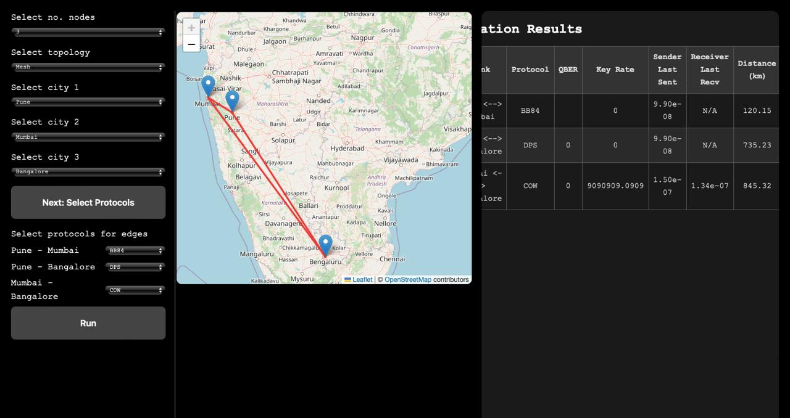

Usage Guide
This simulator allows users to explore quantum key distribution (QKD) protocols in a configurable network environment. The system is designed to be interactive and intuitive, with visual feedback at each step.
Node Selection
Users can select up to 6 nodes to include in the QKD network. Each node corresponds to a city in India.
- Cities are displayed on an interactive map of India.
- Clicking on a city adds it to the network.
- The simulator calculates distances between selected cities to model realistic fiber-optic transmission losses.
Topology Selection
After selecting the nodes, users can choose a network topology to define how the nodes are connected. Available topologies include:
-
Star
A central node connected to all others. -
Mesh
All nodes are directly connected to each other. -
Ring
Each node is connected to two others, forming a closed loop. Each edge (i.e., connection between two nodes) can be assigned a QKD protocol to simulate. Supported protocols include: -
BB84
- COW
- DPS
The selected protocol will determine how key bits are generated and transmitted between nodes.
Simulation and Output
Once nodes, topology, and protocols are selected, the simulator runs a complete QKD session over the network. Output metrics are displayed in real time on the page, including:
- QBER (Quantum Bit Error Rate)
- Key rate
- Sender's last sent bits
- Receiver's last received bits
